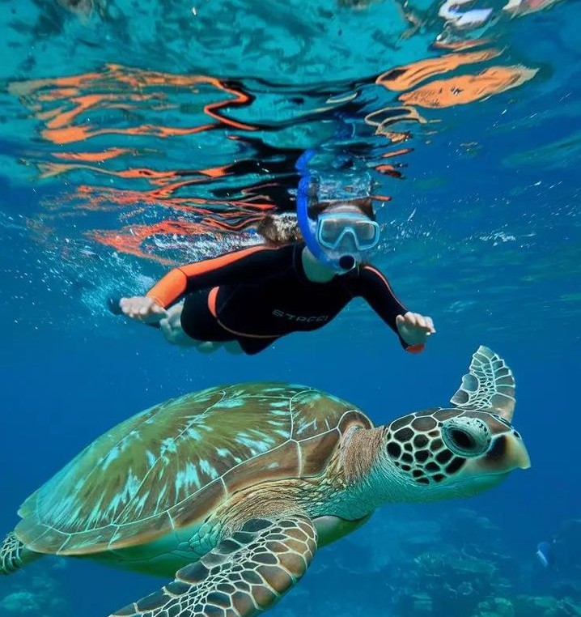
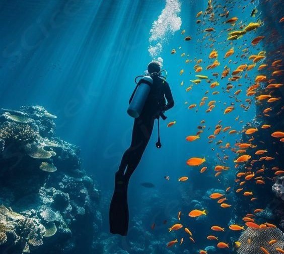
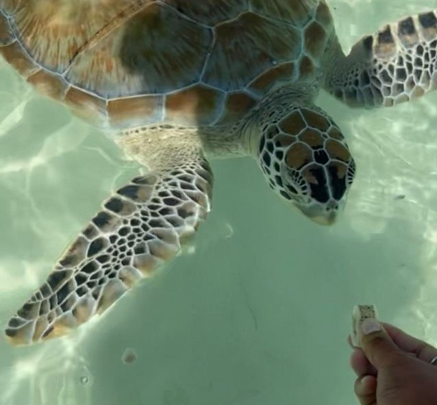
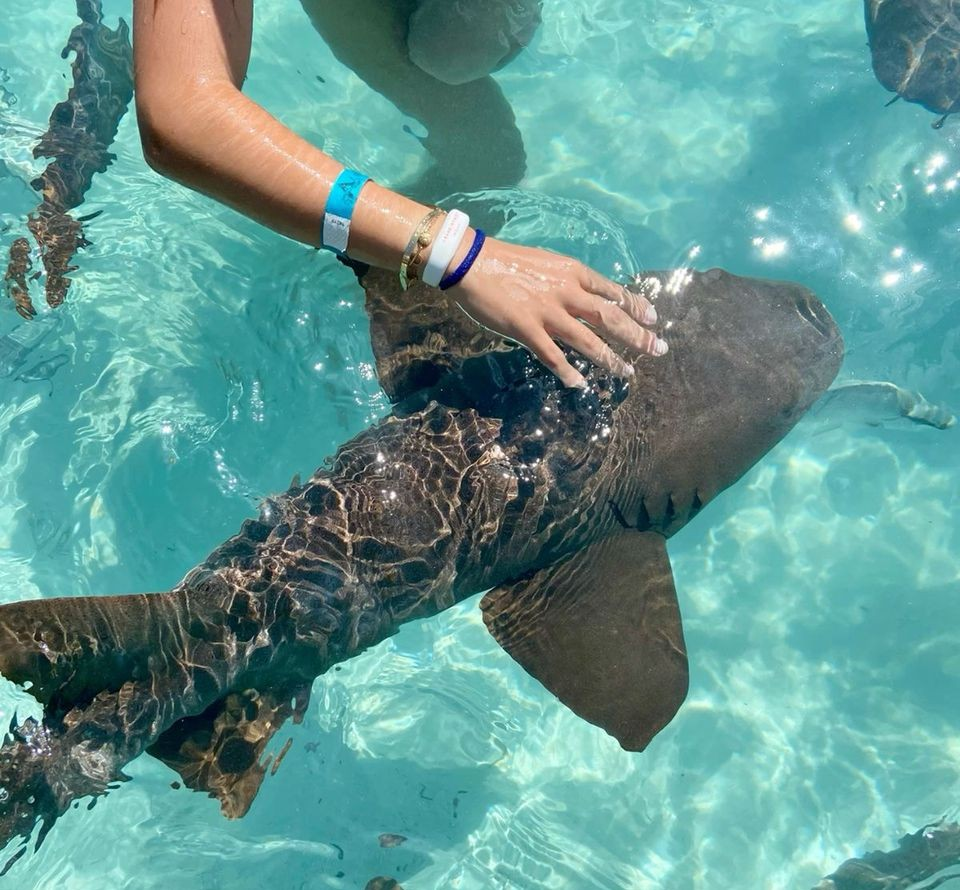
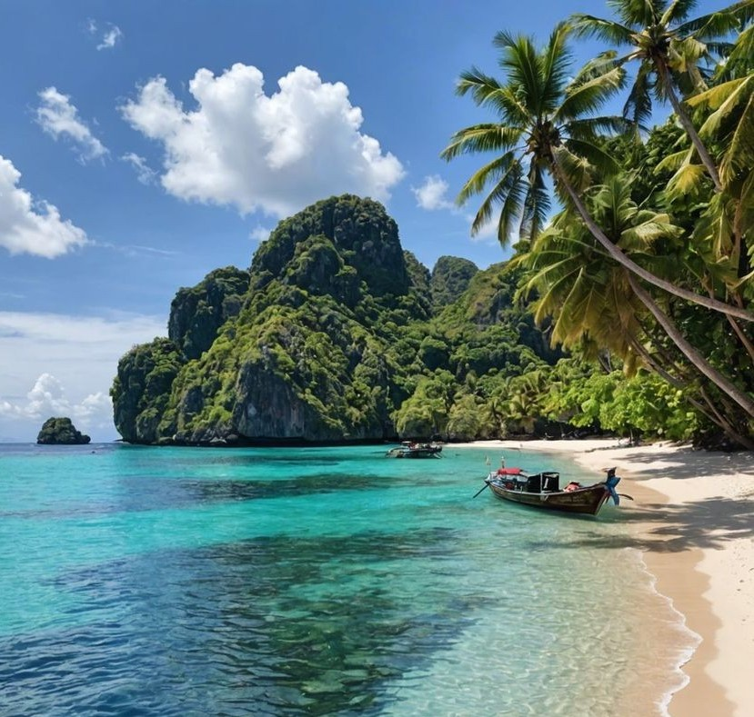
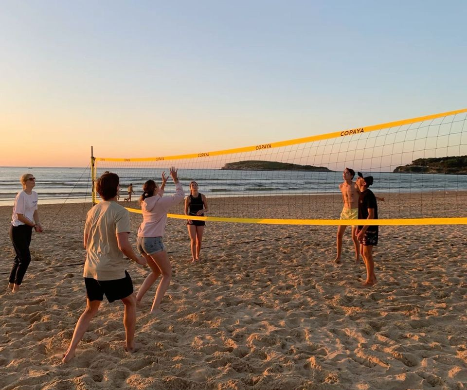
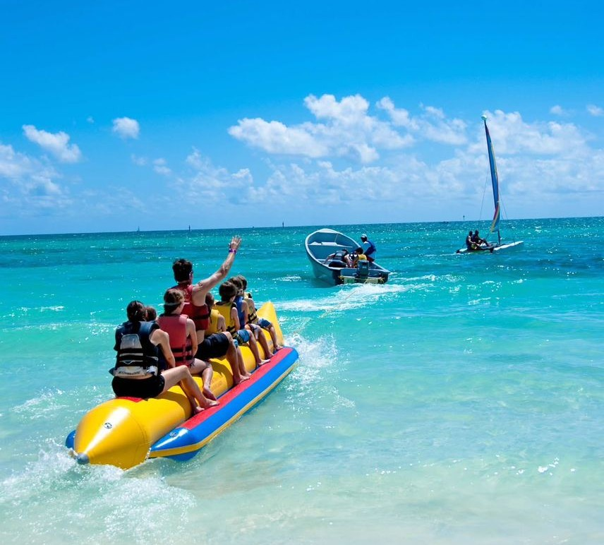
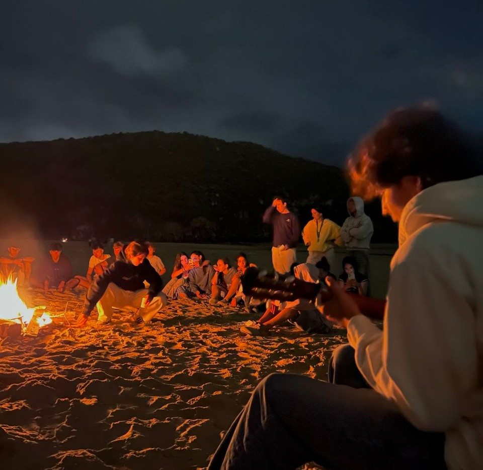

Snorkeling & Marine Life
Snorkeling is the main attraction on Redang Island. Visitors can explore crystal-clear waters filled with colorful coral reefs, tropical fish, sea turtles, and other marine species. Many snorkeling spots are located close to the shore, making the activity suitable for beginners and families.
Scuba Diving
Redang Island is one of Malaysia’s top scuba diving destinations. Certified dive centers offer guided dives to deeper reefs where divers can experience vibrant coral walls, larger marine creatures, and excellent underwater visibility.
Feeding Turtle/ Baby Shark
Snorkeling is the main attraction on Redang Island. Visitors can explore crystal-clear waters filled with colorful coral reefs, tropical fish, sea turtles, and other marine species. Many snorkeling spots are located close to the shore, making the activity suitable for beginners and families.
 Island & Nature Exploration
Nature lovers can enjoy light jungle trekking, exploring the island’s greenery, and discovering scenic viewpoints. These activities allow visitors to experience Redang’s natural landscape beyond the beaches.
Water & Beach Activities
Apart from snorkeling and diving, visitors can participate in various water and beach activities such as kayaking, paddle boarding, beach volleyball, and boat rides. Suitable for individuals, families, and group travelers.
 Night & Resort Activities
Some resorts organize night activities such as beach BBQs, cultural performances, outdoor movie nights and others.
